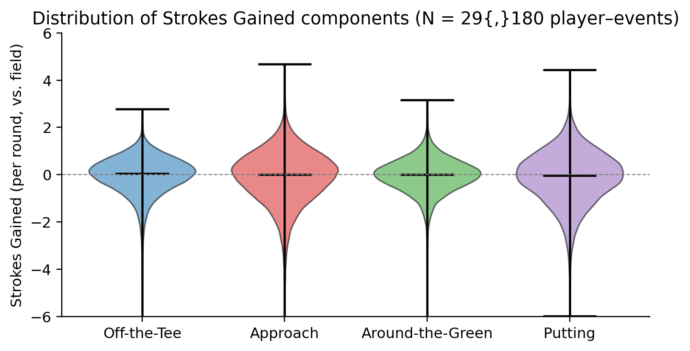
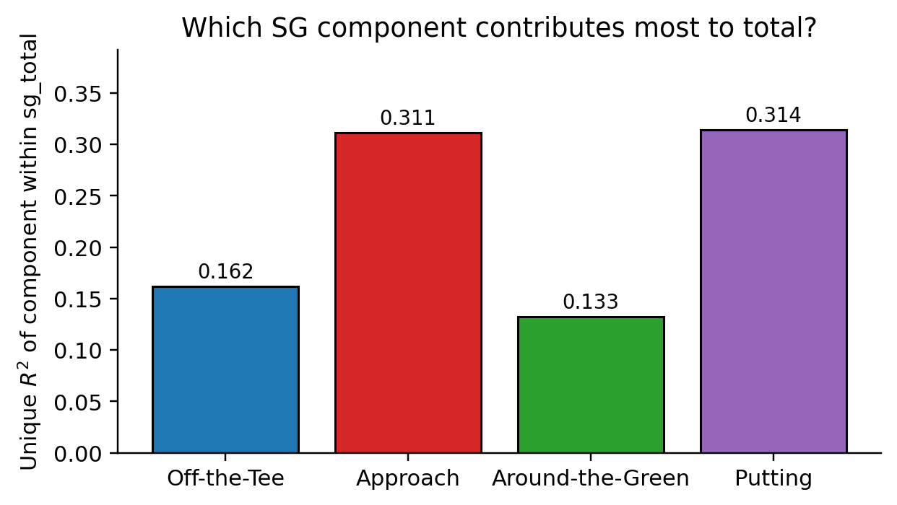
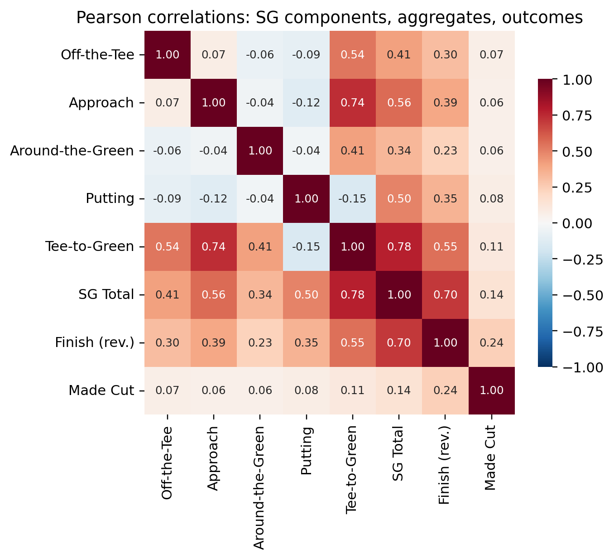
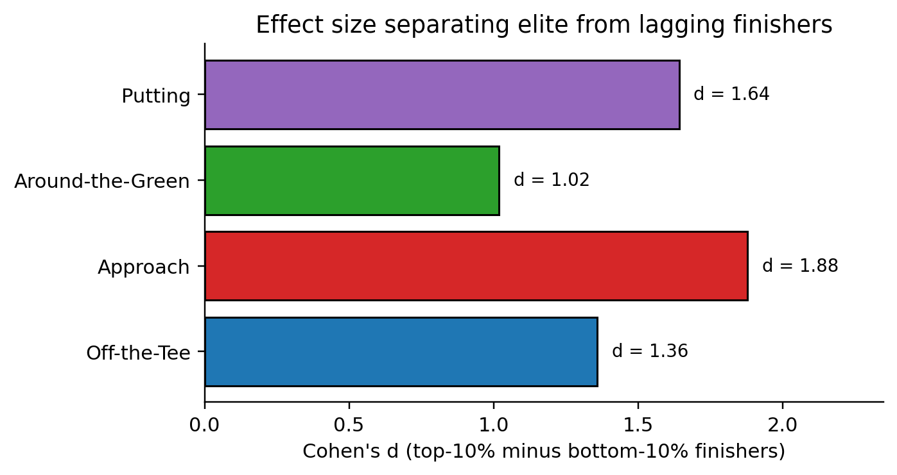
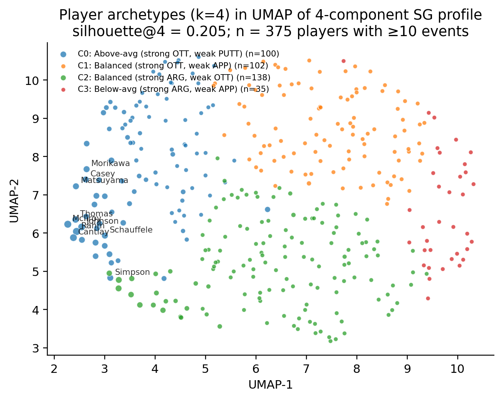
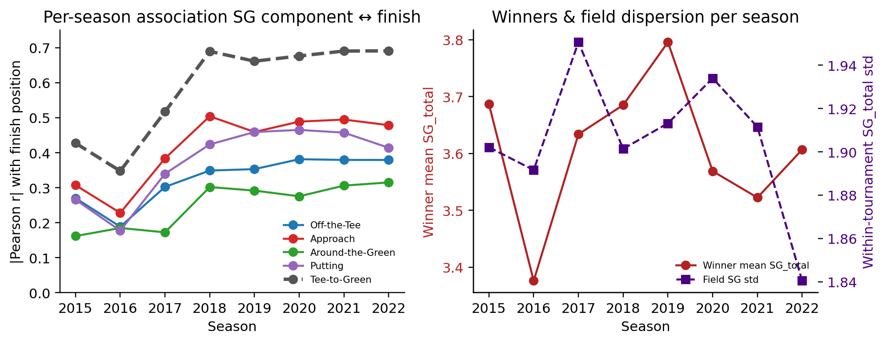
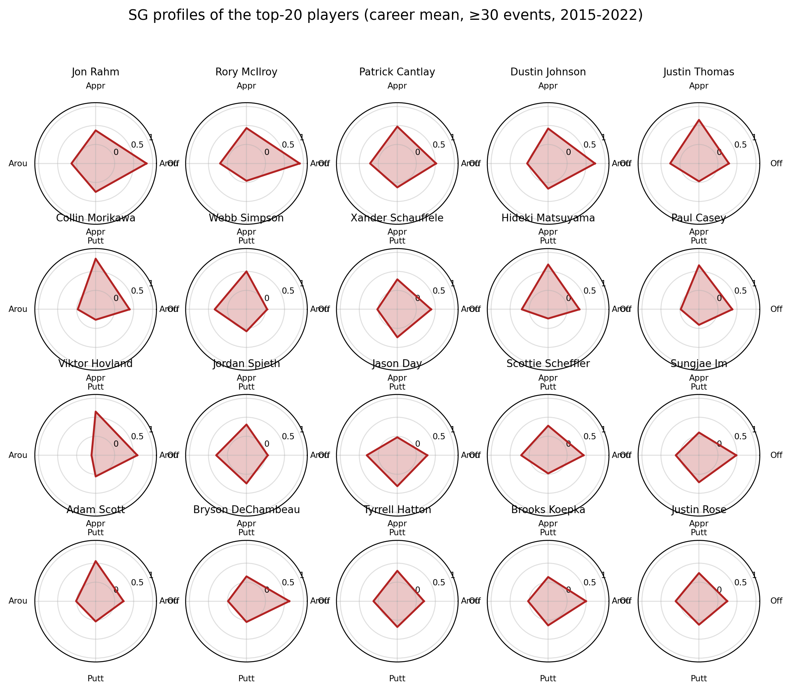

A data-mining study of Strokes Gained, player archetypes, and finish position in 333 tournaments across the 2015–2022 PGA Tour seasons.
Across 29,180 player–event rows with complete Strokes Gained attribution, approach and putting each explain roughly 31% of the unique variance in SG_total, and each carries a within-tournament standardised coefficient of ≈ 0.60 for predicting finish position — about 50% larger than off-the-tee and around-the-green. Four player archetypes emerge from k-means on career SG profiles; the “ball-striker” archetype captures 19 of the top 20 players by career SG_total and 4.2× more wins per player than the balanced short-game cluster. A random forest on just four SG inputs predicts cut-making at ROC–AUC = 0.894 (5-fold CV) and finish position with MAE ≈ 7.3 places.
The source is the ASA All PGA Raw Data – Tournament Level CSV distributed on Kaggle — one row per player–tournament, with Strokes Gained attribution on 79.2% of rows, covering eight PGA Tour seasons. We coerce “NA” strings to missing, drop rows lacking complete SG attribution, and rank only the cut-making subset to avoid the systematic bias introduced when comparing strokes totals of cut-makers to cut-missers.

Leave-one-out unique-R² regression of sg_total on its four categorical components reveals a striking imbalance: approach (0.311) and putting (0.314) together account for more than 60% of the explainable variance, while off-the-tee (0.162) and around-the-green (0.133) trail significantly behind. The finding is echoed in Pearson correlations with SG_total: rAPP = 0.617, rPUTT = 0.555, rOTT = 0.450, rARG = 0.399.


Within-tournament standardised regressions (241 tournaments, minimum 30 cut-makers each) give near-identical standardised coefficients for approach and putting (β* ≈ 0.60), substantially larger than OTT (0.44) and ARG (0.41). The average within-tournament R² is 0.88. Cohen’s d between the top- and bottom-10% finishers is a further 1.5× larger for approach than for around-the-green.

We aggregate 375 players with ≥10 SG-recorded events to the player level, standardise their four-component career SG profile, and fit k-means with k = 4 (selected for interpretability; silhouette = 0.205). Four clusters emerge, each with a distinct signature:
| Archetype | n | SG_total | Cut rate | Wins / player | Signature |
|---|---|---|---|---|---|
| C0 · Ball-strikers | 100 | +0.21 | 0.68 | 1.31 | strong OTT + APP, weak PUTT |
| C1 · Below-avg all-rounders | 102 | −0.90 | 0.46 | 0.28 | balanced but weak APP |
| C2 · Short-game specialists | 138 | −0.36 | 0.57 | 0.57 | strong ARG + PUTT, weak OTT |
| C3 · Marginal tour players | 35 | −2.00 | 0.29 | 0.11 | weak across the board |
The ball-striker archetype (C0) captures 19 of the top-20 players by career SG_total — Rahm, McIlroy, Cantlay, Johnson, Thomas, Morikawa, and so on — and drives 4.2× more wins per player than the balanced short-game group. The two notable top-20 outliers are Jordan Spieth and Jason Day, classified into C2 because their SG profiles are putter- and wedge-led.

Winner SG_total per round is remarkably stationary at 3.38–3.80 strokes across eight seasons, and the within-tournament SG standard deviation hovers at 1.84–1.95 every year. The year-on-year variability in SG-component–finish correlations is almost entirely driven by the 2015–2016 coverage sparsity, not a true regime change.

Two supervised models use only the four SG components as features, trained with 5-fold cross-validation (seed 42):
| Task | Model | Metric | Value |
|---|---|---|---|
| Made-cut classification | Always-yes baseline | ROC–AUC | 0.500 |
| Logistic (L2) | ROC–AUC | 0.885 | |
| Random Forest (400 trees) | ROC–AUC | 0.894 | |
| Finish-position regression | Ridge (L2) | R² | 0.545 |
| Random Forest | MAE (places) | 7.33 |
Permutation importances from the cut-making RF corroborate the correlation story: PUTT > APP ≫ OTT ≈ ARG.

@misc{xiong2026sgminepga,
title = {What Separates Elite PGA Tour Players?
A Data-Mining Study of Strokes Gained, Player Archetypes,
and Finish Position in 333 Tournaments (2015--2022)},
author = {Xiong, Edward},
year = {2026},
url = {https://github.com/edwardxiong2027/sgmine-pga}
}
Broadie, M. (2012). Assessing Golfer Performance on the PGA Tour. Interfaces 42(2), 146–165.
Broadie, M. (2014). Every Shot Counts. Gotham Books.
Fearing, D., Acimovic, J., & Graves, S. C. (2011). How to Catch a Tiger: Understanding Putting Performance on the PGA Tour. Journal of Quantitative Analysis in Sports 7(1).
Hickman, D. C., & Metz, N. E. (2019). Driving Distance and the PGA Tour. Journal of Sports Economics 20(8), 1032–1056.
McInnes, L., Healy, J., & Melville, J. (2018). UMAP: Uniform Manifold Approximation and Projection for Dimension Reduction. arXiv:1802.03426.